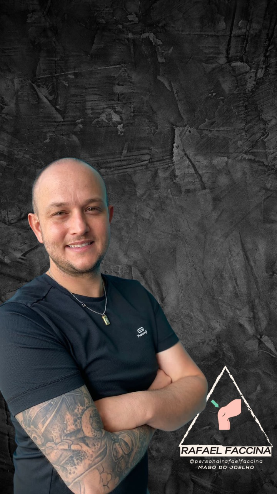

Treino seguro e progressivo para condromalacia, artrose e lesões. Sem agachamento profundo. Sem piorar. Com resultado real — em casa ou na academia.
Aquele desconforto ao subir escadas, agachar ou depois de sentar por muito tempo.
O barulho que aparece toda vez que dobra o joelho e te lembra que algo não está certo.
Você fica na dúvida: "esse exercício vai piorar?" e acaba não treinando por medo.
Treina, piora, para, descansa, volta... o ciclo não termina porque a causa nunca foi resolvida.
Antiinflamatório toda semana. Funcionou por um tempo, mas a dor sempre volta.
Deixou de fazer atividades que ama. Caminhada, academia, lazer — tudo virou risco.

Sou o Rafael Faccina. Educador físico há 15 anos, com especialização em joelho. Dedico minha carreira a ajudar pessoas com dores no joelho a voltarem a se mover com segurança e confiança.
Desenvolvi o método Fit Free Joelhos para oferecer um caminho claro — sem achismo, sem exercício genérico, sem medo. Baseado em ciência e na prática real com centenas de alunos.
Não é treino qualquer. É um programa completo em 4 pilares que atacam a raiz do problema.
Técnicas para soltar a musculatura tensa ao redor do joelho, aliviando a sobrecarga imediata e preparando o corpo para o treino.
Alongamentos para os músculos que influenciam diretamente o joelho — isquiotibiais, quadríceps, IT band e panturrilha.
Exercícios que lubrificam a articulação, melhoram a amplitude de movimento e reduzem rigidez e travamento.
Fortalecimento progressivo de glúteos, VMO e estabilizadores — sem agredir a cartilagem.
Rafael entende seu histórico, suas dores e seus objetivos antes de montar qualquer plano.
Treino adaptado para você — para casa ou academia, respeitando sua condição atual.
Suporte direto no WhatsApp para tirar dúvidas e ajustar o treino conforme sua evolução.
"Tinha medo de treinar pernas por causa da condromalacia. Com o método do Rafael aprendi quais exercícios fazer de verdade. Em 3 semanas a dor diminuiu muito."
"Já tinha tentado fisioterapeuta, médico, remédio. Nada resolvia. O Rafael me deu um plano claro e finalmente estou conseguindo treinar sem dor."
"Nunca pensei que ia conseguir treinar de novo sem sentir dor. O método é diferente de tudo que tentei. Simples, direto e funciona de verdade."
Não adie mais sua qualidade de vida. Fale diretamente com Rafael e descubra o plano certo para o seu caso.
Falar com Rafael agoraOu acesse: wa.me/5511947882500
Conteúdo gratuito sobre joelho todos os dias — exercícios, erros, dicas e muito mais.